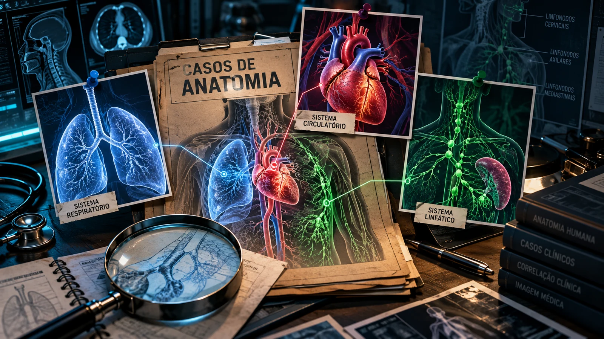

REVISÃO GUIADA • 5 AULAS
Os prontuários chegaram.
A anatomia é a evidência.
Em cada caso clínico, a equipe precisa localizar, mostrar ou dizer onde a estrutura deveria estar na peça. O app libera pistas, imagens, localização, função e acesso ao atlas quando necessário.
Regra da investigação: o nome só vale depois de uma relação anatômica que sustente a resposta.
0casos concluídos
25casos clínicos
0%progresso
DOSSIÊ PRINCIPALRespiratório • Circulatório • Linfático
PROTOCOLO
Como cada equipe resolve um caso
01Leia o prontuárioEntenda a história antes de procurar nomes.
02LocalizeUse região, órgão e marcos anatômicos.
03Mostre ou indiqueVisível, parcial ou não identificável na peça.
04Defenda a respostaDiga onde fica e qual relação confirma.
05Feche o laudoConfira localização, função e atlas de apoio.
ARQUIVOS
Escolha a aula
Cada arquivo foi planejado para aproximadamente 50 minutos.

CRONÔMETRO DA AULA50:00
Etapa 1
ETAPA 1/1
0%estruturas verificadas
Para cada estrutura: apontem na peça quando possível. Se não estiver identificável, escolham “não visível” e digam em voz alta onde ela deveria estar e qual marco usariam.